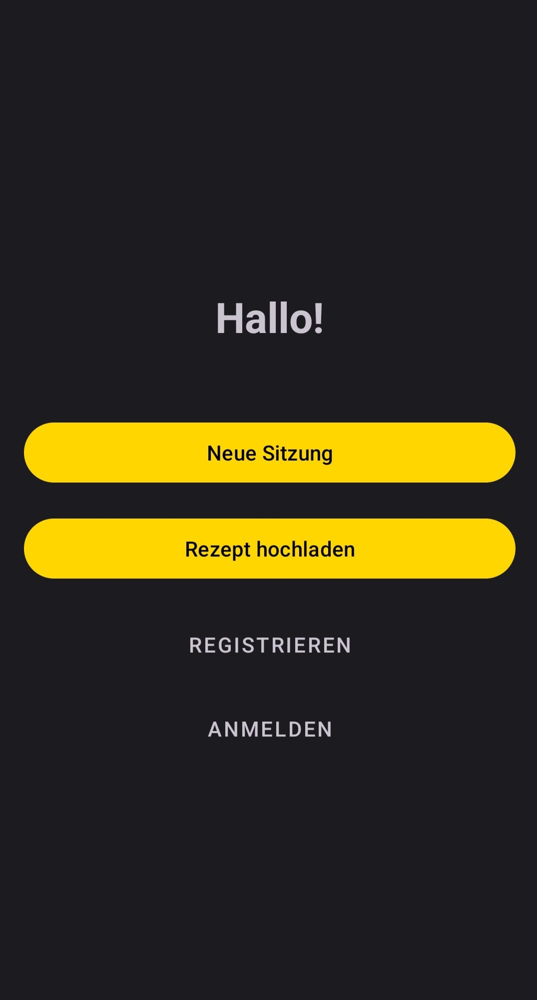
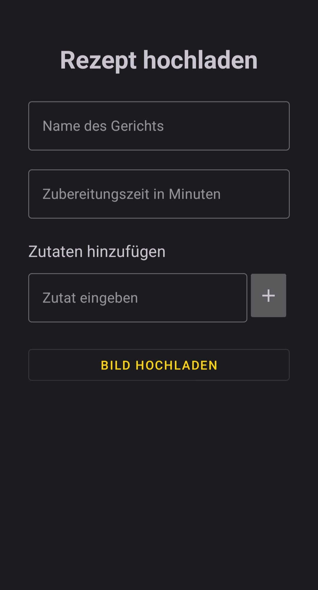
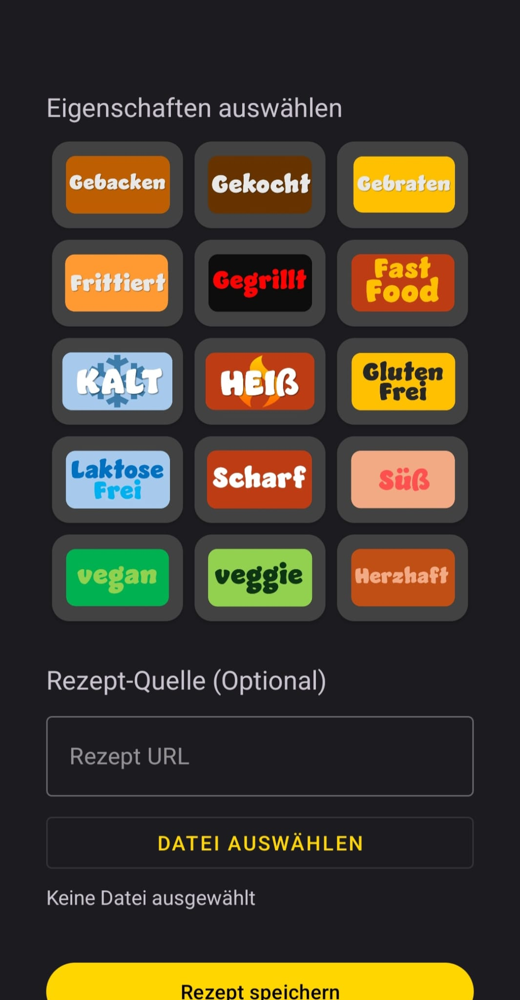
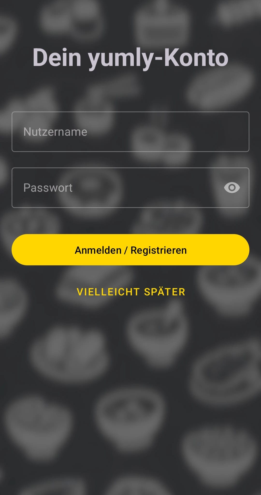
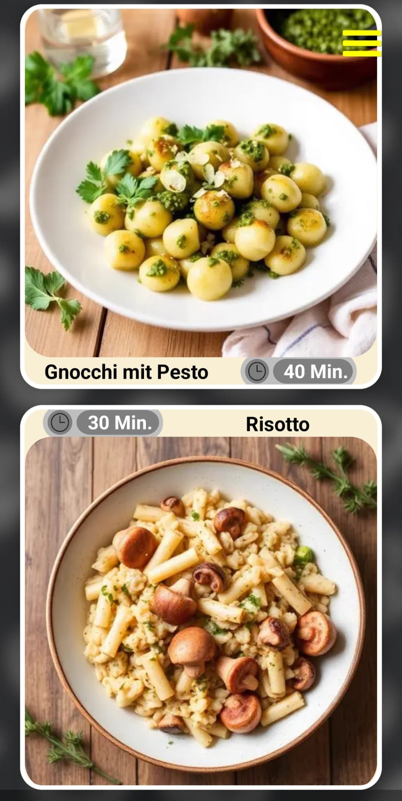
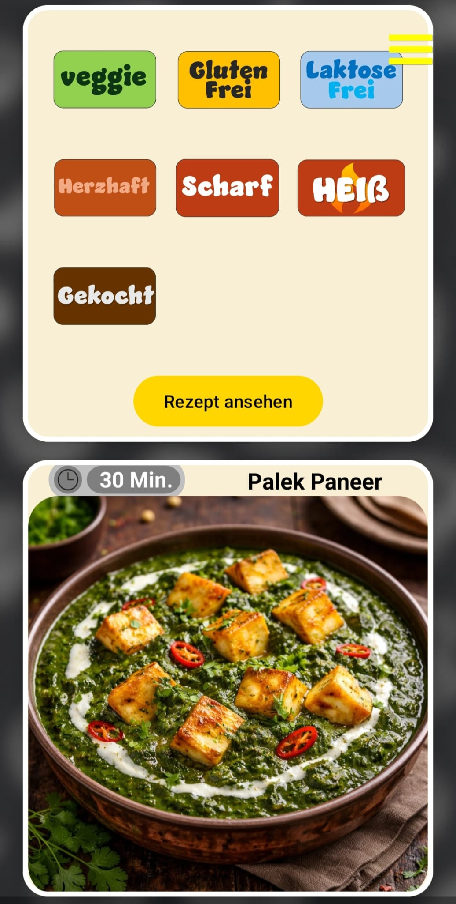
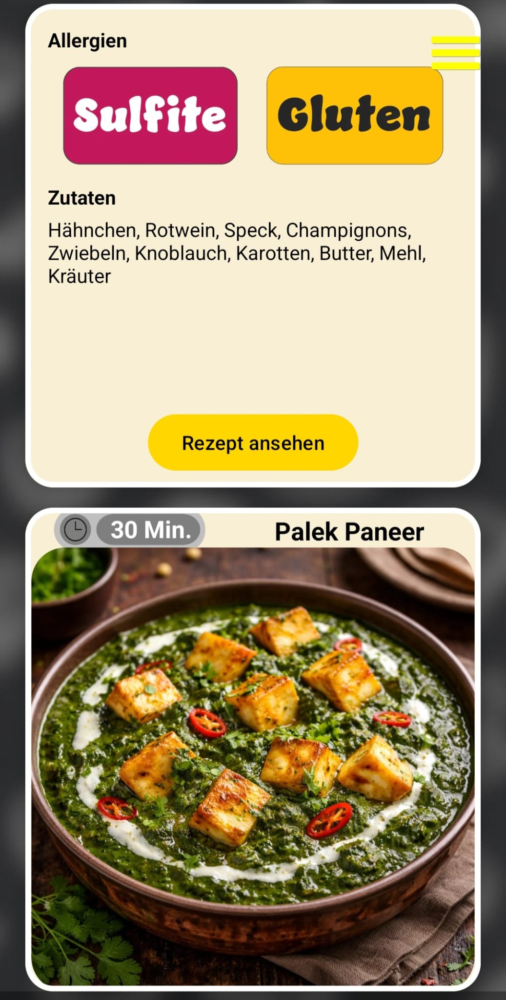
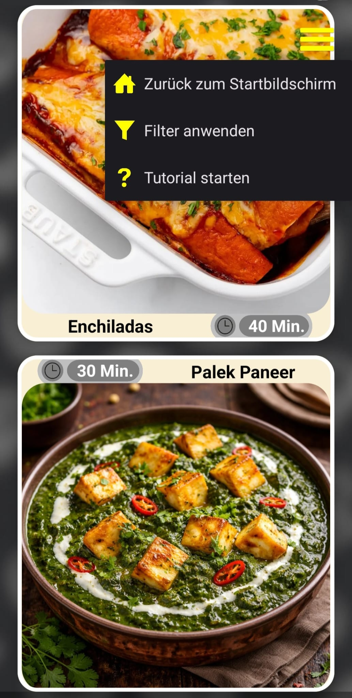
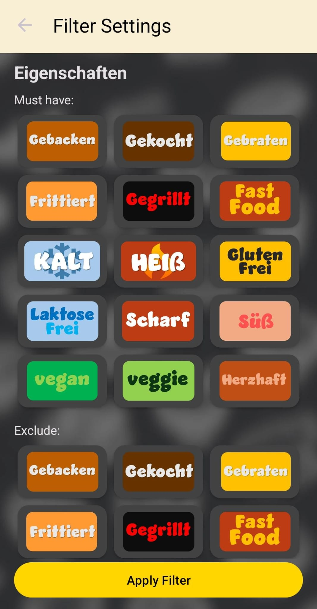
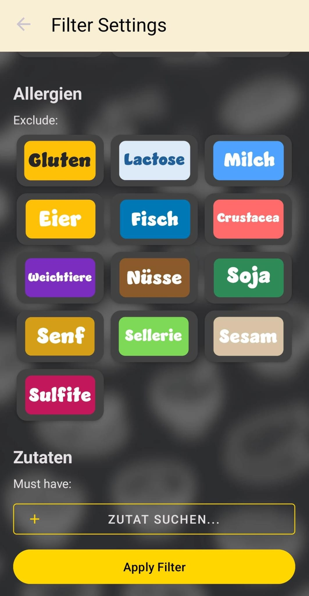

App - Tutorial

Auf dem Home-Bildschirm findest du vier Buttons. Wenn du auf Neue Sitzung klickst, gelangst du zur Gerichtsauswahl. Du kannst hier ebenfalls ein Rezept hochladen, dich registrieren und anmelden.


Wenn du auf "Rezept hochladen" klickst, landest du hier. Hier kannst du dein eigenes Rezept in der App hochladen und zur Gerichtsauswahl hinzufuegen. Weiter unten kannst du die Eigenschaften deines Gerichts auswaehlen, z. B. scharf, vegan oder suess. Du kannst auch eine Rezeptquelle angeben, falls du eine hast. Zum Schluss gibst du deinem Gericht ein passendes Bild und fertig.

Wenn du im Home-Screen auf Anmelden oder Registrieren geklickt hast, landest du hier. Hier kannst du dir dein Yumly-Konto erstellen mit einem Nutzernamen und einem Passwort.



Wenn du auf "Neue Sitzung" geklickt hast, landest du hier. Das ist die Gerichtswahl, quasi das Herzstück der Yumly-App. Du hast immer oben sowie unten eine Karte mit einem Gericht, und du schiebst das Gericht, das dir nicht gefällt, nach links oder nach rechts und erhältst dann ein neues. Das machst du so lange, bis du dich auf eins festgelegt hast. Dann kannst du mit einem simplen Klick auf die Karte des Gerichts diese umdrehen und erhältst detaillierte Infos zu diesem Gericht. Du siehst dessen Eigenschaften, Allergien und Zutaten. Wenn du bereit bist, das Gericht kochen zu wollen, dann musst du auf den "Rezept ansehen"-Button klicken. Dieser befindet sich wie abgebildet auf der Rückseite der Karte und führt dich direkt auf unsere Website mit dem richtigen Rezept.

Oben rechts befindet sich ein kleiner Menü-Button. Wenn du darauf klickst, kannst du noch beliebige Filter auswählen, um die gezeigten Gerichte weiter eingrenzen zu können. Dazu gelangst du über das Menü auch wieder zum Home-Screen und das Tutorial für die Gerichtsauswahl findest du dort ebenfalls.


Hier siehst du unser Filter-Menü. Hier kannst du die Eigenschaften der Gerichte sowie Allergien und Zutaten angeben, die dir angezeigt werden sollen oder nicht.
App Tutorial
On the home screen you will find four buttons. If you click New Session, you will get to the dish selection. You can also upload a recipe, register, and log in here.
When you click "Upload Recipe", you get here. Here you can upload your own recipe in the app and add it to the dish selection. Further down you can choose the properties your dish should have, e.g. spicy, vegan, or sweet. You can also provide a recipe source if you have one. Finally, give your dish a suitable image and you are done.
If you clicked Log In or Register on the home screen, you land here. Here you can create your Yumly account with a username and a password.
If you clicked "New Session", you land here. This is the dish selection, the heart of the Yumly app. You always have a card with a dish at the top and bottom, and you swipe the dish you do not like left or right to get a new one. You keep doing that until you settle on one. Then you can flip the dish card with a simple tap and get detailed info about this dish. You see its properties, allergies, and ingredients. If you are ready to cook the dish, you must click the "View Recipe" button. It is on the back of the card as shown and takes you directly to our website with the right recipe.
At the top right there is a small menu button. If you click it, you can select additional filters to further narrow the dishes shown. From the menu you can also get back to the home screen, and the tutorial for dish selection is available there as well.
Here you can see our filter menu. Here you can specify the properties of dishes as well as allergies and ingredients that should or should not be shown to you.